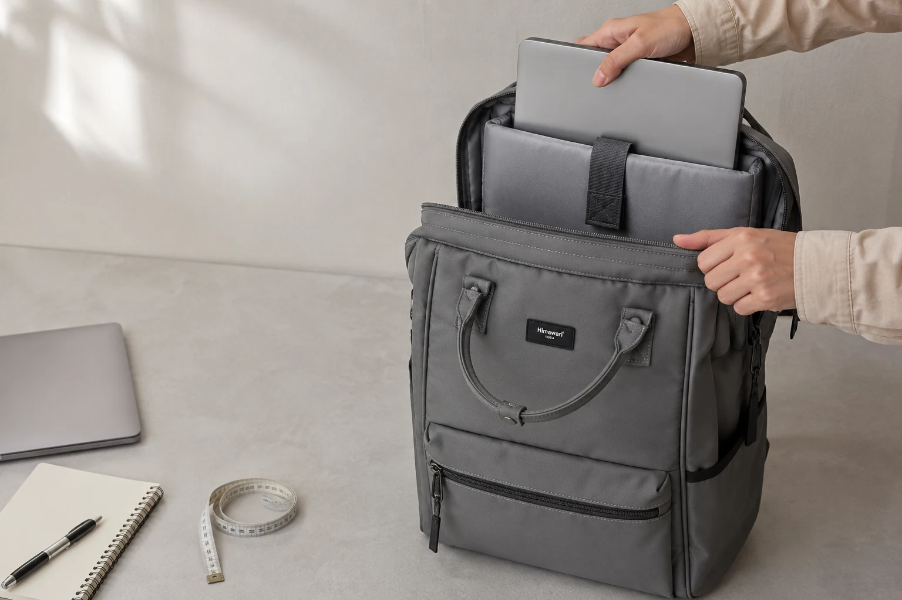

노트북 백팩 수납칸 고르기: 기기 치수부터 바닥 여유까지

노트북 백팩을 고를 때 가장 먼저 보게 되는 숫자는 흔히 화면 크기입니다. 하지만 같은 인치로 표시된 기기도 베젤, 본체 비율, 두께와 케이스 유무에 따라 실제 크기가 달라집니다. 구매 전에는 기기 전체 치수와 수납칸의 입구·깊이·바닥 구조를 함께 확인해야 합니다.
1. 노트북의 실제 가로·세로·두께를 재세요
제조사 사양표에서 기기 본체의 가로, 세로, 두께를 확인하거나 직접 줄자로 잽니다. 보호 케이스를 항상 씌운다면 케이스를 포함한 상태를 기준으로 삼으세요. 충전기나 마우스는 노트북 치수에 더하지 말고 별도 수납할 물건으로 분리해 기록합니다.
현재 쓰는 백팩에서 기기가 너무 꼭 맞거나 내부에서 많이 움직인다면 그 느낌도 적어 두면 좋습니다. 새 가방의 수납칸을 비교할 때 원하는 여유 범위를 판단하는 현실적인 기준이 됩니다.
2. 내부 치수뿐 아니라 입구 모양을 확인하세요
수납칸 안쪽이 넓어도 지퍼 입구가 짧거나 모서리가 좁으면 기기를 비스듬히 넣어야 할 수 있습니다. 제품 사진에서 지퍼가 어디까지 열리는지, 손잡이나 덮개가 입구를 가리지 않는지 살펴보세요. 온라인 정보만으로 판단하기 어렵다면 기기 모델과 케이스 사용 여부를 함께 적어 판매자에게 문의합니다.
3. 기기가 내부에서 어떻게 고정되는지 보세요
전용 슬리브, 밴드 또는 덮개가 있다면 기기를 넣고 닫았을 때 과하게 누르지 않는지 확인합니다. 수납칸이 메인 공간과 나뉘어 있으면 책, 물병, 파우치가 기기 표면에 직접 닿는 일을 줄이기 쉽습니다. 다만 분리 구조만으로 충격 보호를 단정할 수는 없으므로 제품 설명의 구조와 사용 조건을 함께 확인하세요.
충전기, 어댑터와 케이블은 기기와 같은 칸에 느슨하게 넣기보다 작은 파우치나 별도 포켓에 둡니다. 단단한 플러그가 한 지점을 계속 누르지 않도록 하는 단순한 습관입니다.
4. 수납칸 바닥과 가방 바닥의 간격을 살피세요
가방을 내려놓을 때 노트북 수납칸이 바닥과 어떻게 만나는지 제품 단면이나 내부 사진에서 확인합니다. 수납칸이 가방 바닥보다 위에서 끝나는 구조인지, 바닥에 별도 보강이나 완충층이 있는지는 제품마다 다릅니다. 어떤 구조든 가방을 던지거나 단단한 바닥에 세게 내려놓는 행동은 피하는 편이 안전합니다.
5. 평소 짐을 함께 넣은 상태를 상상하세요
노트북만 잘 들어가도 책, 서류, 물병과 겉옷을 더하면 가방의 두께와 무게 배분이 달라집니다. 자주 넣는 물건을 목록으로 만들고 등에 가까운 쪽에는 평평한 물건을, 바깥쪽에는 가벼운 물건을 두는 식으로 자리를 정해 보세요. 출퇴근 동선까지 고려하려면 지하철 출퇴근 백팩 점검표를 함께 확인할 수 있습니다.
구매 전 6문장 점검표
- 케이스를 포함한 노트북 전체 치수를 확인했나요?
- 수납칸 내부와 지퍼 입구의 크기를 함께 봤나요?
- 기기를 고정하는 구조가 사용하기 편한가요?
- 충전기와 단단한 소지품을 분리할 공간이 있나요?
- 수납칸과 가방 바닥의 구조를 확인했나요?
- 평소 짐을 모두 넣어도 지퍼가 무리 없이 닫히나요?
직장인 백팩의 전체적인 형태와 출근복 조화를 고민한다면 직장인 백팩 선택 가이드도 이어서 읽어보세요. 마지막 선택은 제품 이름보다 실제 기기 치수와 매일의 짐에 맞는지가 기준입니다.
참고·안내
- Himawari 제품별 크기·수납 정보
- 기기 호환 여부는 노트북과 케이스의 실제 치수를 제품 정보와 비교해 확인해 주세요.
자주 묻는 질문
화면 크기가 같으면 모든 노트북이 같은 수납칸에 들어가나요?
화면 크기가 같아도 베젤, 본체 두께와 가로·세로 길이가 다를 수 있습니다. 기기 전체 치수와 케이스를 씌운 상태의 크기를 제품 수납 정보와 비교하세요.
노트북 수납칸에 충전기도 함께 넣어도 되나요?
단단한 충전기나 플러그가 기기 표면을 누르지 않도록 별도 포켓이나 파우치에 분리하는 편이 좋습니다.
온라인에서 수납칸의 여유를 어떻게 확인하나요?
제품에 표시된 내부 치수와 입구 형태를 확인하고, 현재 사용하는 기기와 케이스의 실제 치수를 직접 잰 뒤 비교하세요. 정보가 부족하면 판매자에게 문의하는 것이 안전합니다.